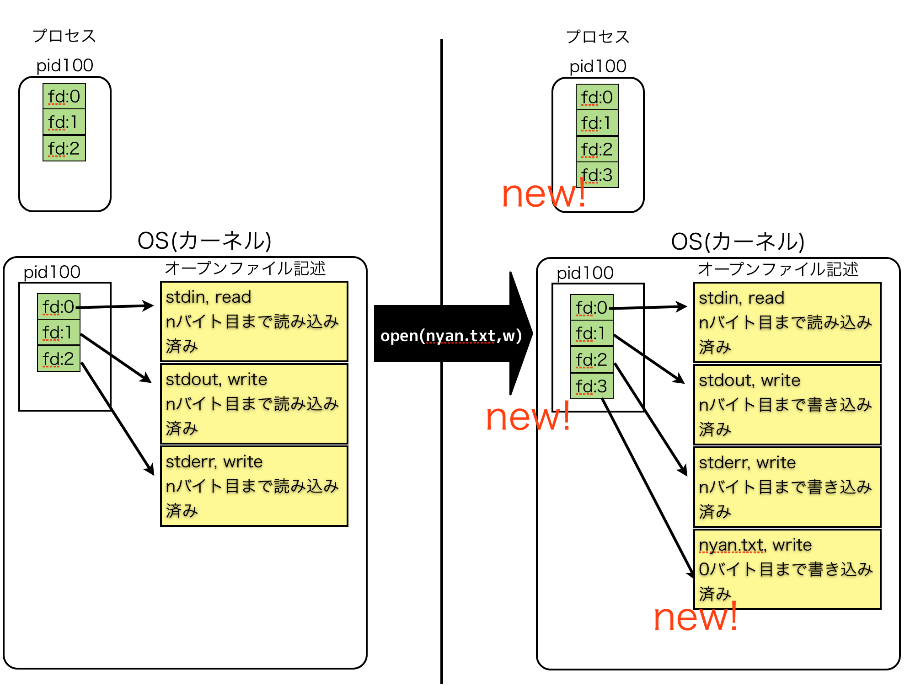
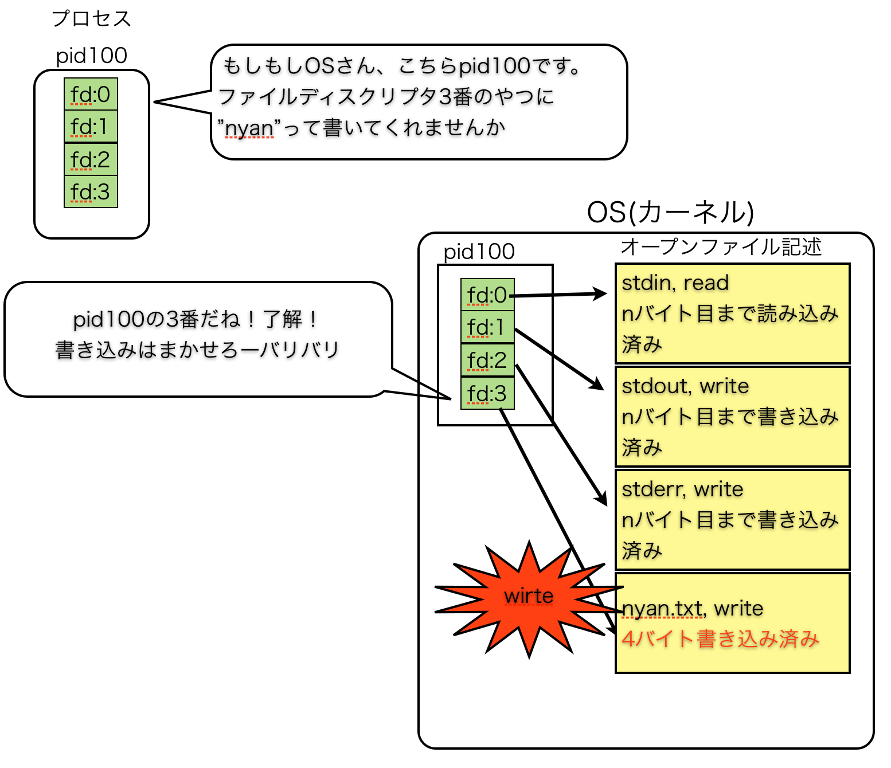
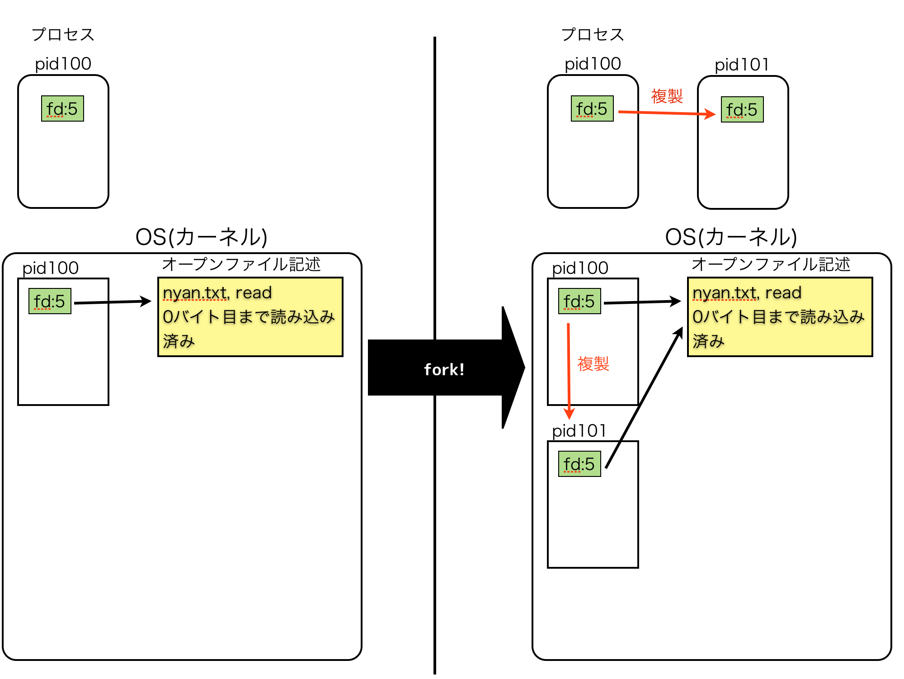
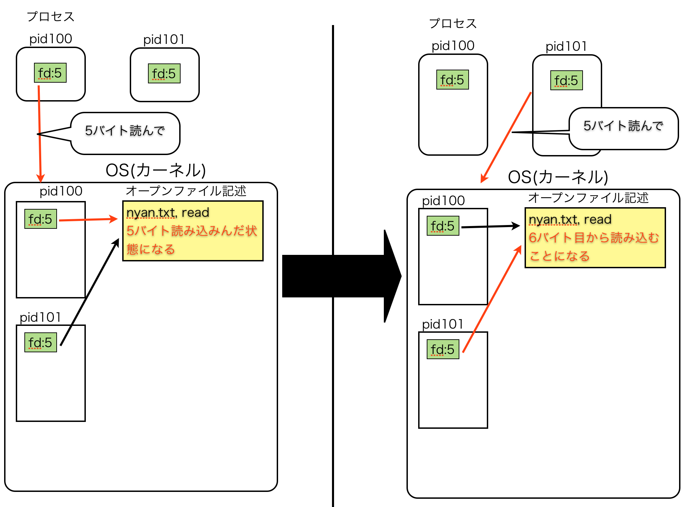

この文書は*nix系のシステムにおけるプロセスやシグナルなどについて説明することを目的に書かれました。「プロセスとかよくわかってないからちゃんと知りたいな」みたいなひとたちが想定読者です。
書いているあいだは gist で管理されていたのですが、ボリュームが大きくなったので github で管理するように変えました。
epub化したもの、pdf化したものが release ディレクトリに入っています。thanks to mitukiii & moznion！## 導入
*nix系のシステムは、もともと複数のユーザーが同じコンピューターリソース(CPUやメモリー)を同時に使うことを前提に作られています。そのため、*nix系のシステムでは様々な処理が同時に行われるような仕組みになっています。実際、小規模なwebサービスでは nginx と unicorn と MySQL がひとつのマシンで同時に走っているような状況は珍しくないのではないでしょうか。
いまはカジュアルに「同時に複数の処理が走っている」と言ってしまいましたが、マシンが持っているCPU(脳みそ)は限られた数なのに、どうやって複数の処理を同時に行っているのでしょうか？ ひとつの脳みそでどうやって複数のことを同時に考えているのでしょうか？ その答えは、「本当は同時に処理は行われていなくて、OSが目にも留まらぬ早さで複数の処理を切り替えているせいであたかも同時に複数の処理が行われているように見える」です。図にするとこういう感じ。
A ----- ---- --------- ----------
B --- -------- ---- -- -------
C ----- ---------- --- --
OSは、上記のように処理A,B,Cを順々に切り替えながら少しずつ処理していきます。この切り替えのタイミングがめっちゃ早いため、人間にはまるで同時に処理されているかのように見えるわけです。この切り替えをする処理の単位が、プロセス(やスレッド)です。上図の場合だと、Aというプロセス、Bというプロセス、CというプロセスをOSがすごい早さで切り替えながら処理しているようなイメージですね。このように、プロセスやスレッドを上手に使うことで、同時に複数の計算が可能になるわけです。
ちなみに、この切り替えをどういう戦略やタイミングで行うかのことを、「スケジューリング」と言います。このへんはOSが面倒を見てくれますが、niceというコマンドで「これははあんまり重要じゃないプロセスなんで、優先度低めでいいよ」という情報をOSに教えたりできて、そうするとOSさんはそのプロセスを処理する時間を少なめにスケジューリングしたりします。
最近のマシンのCPUはコアが複数あるのが普通です。コアがひとつだけならば、ひとつのコアで全てのプロセスをスケジューリングする必要があるわけですが、コアが複数あるため、下記のような感じで今度は「ほんとうの」同時処理が可能になります。
+ ------ + A ----- ---- --------- ----------
| core 1 | B --- -------- ---- -- -------
+ ------ + C ----- ---------- --- --
+ ------ + D --- ---- --------- ----------
| core 2 | E --- -------- ---- -- -------
+ ------ + F ---- ---------- --- --
大規模なデータを処理する場合などには、ひとつのコアだけではなく複数のコアを無駄なく使うためにも、複数のプロセスや複数のスレッドで処理を行う必要が出てくるわけです。
ただ、スレッドに関しては、OSが面倒を見てくれるスレッド(いわゆるネイティブスレッド)と、例えば言語処理系やVMが面倒見てくれるスレッド(いわゆるグリーンスレッド)があって、グリーンスレッドの中にはいくらスレッドを増やしてもコアをひとつしか使えないようなものもあります。CRubyの1.8などがその例ですね。スレッドと一口に言ってもどのような実装になっているかによって特徴が変わってくるので、自分が使っている環境の「スレッド」というのがどのような仕組みをさしているのかは意識しておく必要があるでしょう。
次回はプロセスについてもう少し深くまでもぐって見ていきます。
前回、プロセスとはOSが処理を切り替えるときの処理の単位だという話をしましたが、まずはプロセスの例を見てみましょう
ターミナルで、
$ ps
と入力してみるましょう。psは今実行中のプロセスの一覧を見ることができるコマンドです。オプションなしで実行すると自分が実行中のプロセスの一覧が見れます。で、psを実行してみると、(環境によって異なるかと思いますが)以下のような文字が出力されるかと思います。
PID TTY TIME CMD
4400 pts/2 00:00:00 bash
4419 pts/2 00:00:00 ps
一番右を見ると、(この場合は)bashというプロセスとpsというプロセスが実行されていることがわかります。bashはログインシェル、psはいまさっき打ったpsコマンドですね。ちなみに、一番左のPIDという列は、そのプロセスのidで、実行されているプロセスを一意に判別するために使われているものです。
では、今度は & つきでバックグラウンドでコマンドを実行してみましょう。
$ perl -e 'while(1){sleep}' &
ただsleepし続けるだけのperlのワンライナーです。この状態で、もう一度
$ ps
と入力してみると、
PID TTY TIME CMD
4420 pts/2 00:00:00 perl
のような、さっきは存在していなかったプロセスが新しく増えているのがわかると思います。これがさきほど実行した
$ perl -e 'while(1){sleep}' &
コマンドのプロセスです。新しく処理を始めたら新しくプロセスが生成されたのがわかるかと思います。
さて、バックグラウンドで実行中のsleepするだけのプロセスですが、今度は
$ fg
でフォアグラウンドに処理を戻して、 Ctrl+C かなんかで処理を止めましょう。その後再度 ps コマンドでプロセスの一覧を確認すると、perlのプロセスが無くなっていることが確認できるかと思います。
プロセスは、なんらかの方法で生成されたあとは、ぐんぐん処理を行っていき、処理が終わったり外部から止められたりすると消滅します。
生成 -> 処理中 -> 終了
というライフサイクルを持っているわけです。今簡単に「処理中」と書いてしまいましたが、大きくわけてこの「処理中」には３つの状態があります。
「えっ待ち状態とブロック中ってなにが違うの」という疑問を持ったかた、ごもっともです。でも、その違いは簡単です。「待ち状態」というのは、「もうすぐにでも処理できるよ！CPUさん、はやくわたしを処理して！」という状態のことです。一方、「ブロック中」というのは、たとえばファイルの読み込みを行うときにdisk I/Oを待っているなどで、「今CPUさんが私を処理しようとしても私まだIO待ちだから何もできないよ！」みたいな状態のことです。
さて、さきほど簡単に「プロセスをなんらかの方法で生成」と言いましたが、たとえば新しくコマンドを叩いて新しいプロセスが生成されるとき、中では何が起きてるのでしょうか？
通常、プロセスは、「親プロセス」がforkというシステムコールをOSに送ることによって生成されます。すると、OSは親プロセスをまるっと複製して、「子プロセス」を新しく生成します。このとき、メモリの状態は親プロセスから子プロセスにまるっとコピーされます[^1]。コピーされて新しい環境が出来上がるため、親プロセスでなにか操作しても(変数に新しい値代入するとか新しくインスタンスを生成するとか)、その操作は子プロセスに影響を与えません。親でなんか変更したからといって、子にもその変更が伝わるみたいなことはないわけです。逆もまたしかりで、子プロセスでなにか操作しても、その変化は親プロセスに影響を与えません。
[^1]:「えっ、まるまるメモリーをコピーするの、そんなのメモリーの無駄じゃないの」と思われる方もいるかもしれませんが、そこはよくできていて、COW(Copy On Write)という方法を使うことで、うまいこと無駄なメモリーを食わないようになっています。
こうして、forkにより新しくプロセスが生まれると、OSによりそのプロセス専用の環境が用意されて、その中でいろんな処理が行えるようになるわけです。
こんなふうに、forkによってプロセスは生成されるため、基本的に全てのプロセスには「自分を生んだ親プロセス」が存在することになります。
ちなみに、forkは複数行うことができるので、「子だくさん」なプロセスというのも、あり得ます。preforkのサーバープロセスなんかは子供をたくさん作って、複数の接続のひとつひとつをそれぞれひとつの子供に処理させることで並列性を上げているわけですね。子供たちを酷使するひどいやつです。
さきほど「親プロセスがforkで子プロセス作るんだよ〜〜。だからみんな親がいるんだよ〜〜〜」ってゆるふわな感じで言いましたが、当然「えっじゃあ、その親プロセスは誰が作ったの？」という疑問がわいてきますよね。疑問にお答えしましょう。親プロセスは、「親プロセスの親プロセス」がforkで作ったのです。となると、当然「えっじゃあ、その『親プロセスの親プロセス』はだれが作ったの」いう疑問がわいてきますよね。もちろん、「親プロセスの親プロセスの親プロセス」がforkで作ったのです。となると当然(ry
というように、全てのプロセスはどんどんその「親」を辿って行くことができます。そんなわけで、全てのプロセスの祖先となる「最初のプロセス」というものが存在しないといけないわけです。このプロセスはブート時に生成されて、そのあと全てのプロセスがここを祖先としてforkされていきます。この「最初のプロセス」はPIDが1であり、Linuxの場合は init というプロセスがその実体となります。
$ ps ax | grep init
1 ? Ss 0:10 /sbin/init
このように、プロセスは親子関係の木構造を持っています。この親子関係を「プロセスツリー」と呼びます。プロセスツリーがどうなっているかを調べるためにpstreeというコマンドが使えますので、興味があればpstreeコマンドでどのようなプロセスツリーが生成されているか見てみるのもよいかと思います。pstree コマンドの使いかたはmanで調べてください(丸投げ)
さて、「すべてのプロセスは祖先からforkされて生まれた」という話と「forkは親プロセスをまるっとコピーして子プロセスを作る」という話をしましたが、これ、なんかおかしいですね。そうです。このままでは、「親の複製のプロセス」しかなくって、すべてが同じことを行うプロセスになってしまいます！
そこで必要になるのが、execというシステムコールです。あるプロセスがexecというシステムコールを呼ぶと、OSはそのプロセスをexecの内容で書き換えてしまいます。つまり、execというのは、「自分自身の内容を別の内容で書き換えて実行してしまう」システムコールなんですね。くらくらしてきた！
まとめると、
ことで、親プロセスとは違うプロセスをどんどん生成していくような仕組みになっているわけです。
「日本語だとよくわかんないよ、コードで書いてよ」という声がわたしの脳内から聞こえてきたので、コードで書きます。
use strict;
use warnings;
print "forking...\n";
# forkシステムコールを呼び出す
my $pid = fork;
# forkに失敗すると返り値はundef
die "fork failed." unless defined $pid;
# ここに来てるということは、正常にプロセスが複製された。
# この時点で親プロセスと子プロセスが *別々の環境で*
# 同時にこのプログラムを実行していることになる。
print "forked!\n";
# forkで生成された子プロセスでは、forkの返り値が 0 となる
# 親プロセスでは、生成された子プロセスのpidが入ってくる
if ($pid == 0){
#子プロセスはこっちを実行する
# execシステムコールで、perlのプロセスをrubyのプロセスに書き換えてしまう！
exec "ruby -e 'loop do;sleep;end'";
}
else{
#親プロセスはこっちを実行する
#子プロセスが終了するのを待つ
waitpid($pid,0);
}
上記のようなPerlスクリプトをfork_exec.plという名前で用意して、バックグラウンドで実行してみましょう。すると、以下のような出力が得られると思います。
$ perl ./fork_exec.pl &
forking...
forked!
forked!
なぜこうなるのか、説明しましょう。
print "forking!\n"; という行は、まだfork前なので、プロセスがひとつだけの状態です。なので、普通にひとつの"forking!"が出力されます。しかし、print "forked!\n"; という行は、forkシステムコールでプロセスが複製されたあとです。そのため、この行は親プロセスとそこから複製された子プロセスが、別のプロセスとして実行します。親プロセスは親プロセスで"forked!"という文字列を標準出力という場所に出力します(perlのprintという関数は、引数に渡された文字列を標準出力に出力します)、一方、別の環境で動いている子プロセスも、"forked!"という文字列を標準出力という場所に出力します。今回の場合、親プロセスも子プロセスも標準出力はターミナルを意味するので(このあたりの話はまたあとで詳しくやります)、ターミナルに親プロセスと子プロセスの二つ分のforked!が出力されるわけです。
さて、今バックグラウンドで実行したこのスクリプトですが、ではプロセスはどのようになっているでしょうか。psコマンドで確認して見ましょう。
$ ps
PID TTY TIME CMD
81996 ttys003 0:00.01 perl fork_exec.pl
81998 ttys003 0:00.01 ruby -e loop do;sleep;end
psコマンドの出力に、上記のようなふたつの行が見つかるかと思います。上の perl forkexec.pl というプロセスが私たちがさっき「$ perl forkexec.pl &」と実行したプロセスで、下の ruby -e loop do;sleep;end というプロセスが、forkされた子プロセスです。pstreeで見てみましょう。
$ pstree 81996 (さっきpsで確認した "perl fork_exec.pl" のPIDを指定)
-+= 81996 shinpeim perl fork_exec.pl
\--- 81998 shinpeim ruby -e loop do;sleep;end
というような出力が得られ、"perl fork_exec.pl" というプロセスから "ruby -e loop do;sleep;end" というプロセスが生成されているのがわかるかと思います。
さて、今バックグラウンドで実行しているプロセス(親プロセスです)を fg コマンドでフォアグランドに移して、Ctrl+Cで止めてしまいましょう。その後もう一度psコマンドを叩くと、子プロセスごと消えているのがわかるかと思います。なぜこうなるのかについては、シグナルについて見るときに説明しましょう。
今は、「forkで子プロセスを生成できて、execでそのプロセスの内容を書き換えられた」ということがわかれば十分です。コマンドを叩いて新しいプロセスを生成する場合とかも、内部ではこのようにforkでプロセスを生成して、確保された環境の内容をexecで書き換えるという形で生まれているのです。ちなみに、シェルからコマンドを叩いてプロセスを生成するときには、「親プロセス」に当たるのはシェルのプロセスになります。
あたりを書きたい気持ちがある
さて、前回、プロセスというのは「自分が独占したメモリーの中で動いているので、その中で何をしても他のプロセスのメモリーに影響を与えない」というのを見れたかと思います。でも、そんな自分の中だけで完結してる引きこもりみたいなプロセスじゃあ、意味がないですね。外界からなんかデータをもらって、自分の中で処理して、それを外の世界に知らせる方法が必要になってきます。
そこで、プロセスに外から何かを入力したり、プロセスが外に何かを出力する方法として、「ファイルの入出力」というのがあります。たとえば、ファイルに書かれたデータをプロセスがメモリー上に読み込んでなんか処理をするとか、処理を行った結果をテキストファイルに書き込みをするとか。例を見てみましょう。
まず、以下のようなテキストファイルを nyan.txt という名前で適当な場所に作ってみます。
nyan
nyan nyan
nyan nyan nyan
では、このファイルをプロセスの中に読み込んでみましょう。今日は Ruby を使います。
file = File.open("nyan.txt","r")
lines = file.readlines #ファイルの中身を全部読み込む
file.close
ファイルを open して、その内容を lines という変数に読み込んで、最後にファイルを close しています。ファイルの中のデータはディスクに書かれたものであり、プロセスがもともとメモリー内に持っていたものではありません。このディスクに書かれた内容を
lines = file.readlines
の行でlines変数に読み込むことで、プロセスの「外界」の情報を、プロセスの内部のメモリーに読み込んでいますね。
では今度は出力をしてみましょう。
# nyan_copy.rb
file = File.open("nyan.txt","r")
lines = file.readlines
file.close
file = File.open("nyan_copy.txt","w")
file.write(lines.join)
file.close
nyancopy.rbを、nyan.txtと同じディレクトリに作って、実行してみましょう。nyan.txtと同じ内容の、nyancopy.txtというファイルが生まれたかと思います。さきほどディスクから読み込んでメモリー上に展開したデータを、そのまま別のファイルに対して出力したためですね。
こうして、プロセスはファイルを通じて外部との入出力を行うことができます。
さて、いまは「テキストファイル」への読み書きを行ってみましたが、「Linuxではすべてがファイルなんだよ」みたいな話を聞いたことがないでしょうか？ そんなこと言われても、「はっ？」って感じの話ですよね。「Linuxではキーボードもファイルだからね」みたいなことを言うひとに至っては「こいつ頭大丈夫か、キーボードはキーボードだろうが」みたいな気持ちになりますよね。わたしは最初にこの話を聞いたときに「なにそれ、禅問答？哲学？頭大丈夫？ファイルはファイルだしキーボードはキーボードだろ」って思いました。
「全てがファイル」とか言われると「世の中のすべてはファイルなのだ、そう、きみも、わたしも」みたいな禅問答をやられてるみたいな気持ちになるので、こういう言い方はあまりよくない感じがしますね。だったら、こんなふうに言われたらどうでしょうか？ 「Linuxは、すべての入出力がファイルと同じ感じで扱えるような設計になっているんだよ」。つまり、プロセスが「ここでターミナルからの入力を受け取りたいんだけど」とか、「ネットワーク越しに入力もらってネットワーク越しに出力したいんだけど」みたいなことを言うと、OSさんが「はいよ、実際はHD(さいきんだとSSDかな)上のファイルじゃないんだけど、いつもファイルを通じてディスクを読み書きするのと同じやり方で扱えるように用意しといたよ！」みたいな感じでそのためのインターフェイスを用意してくれてるのです。
さて、例を見てみましょうか。
# stdout.rb
file = File.open("nyan.txt","r")
lines = file.readlines
file.close
file = $stdout # この行だけ書き換えた
file.write(lines.join)
file.close
nyan.txt と同じディレクトリに、今度は stdout.rb を作って、実行してみましょう。nyan.txtの内容が、ターミナルに出力されたかと思います。
rubyの組み込みグローバル変数 $stdout には、「標準出力」と言われるものが、すでにFile.openされた状態で入っています。この「標準出力」の出力先は、デフォルトではターミナルをさします。そのため、さっきテキストファイルに内容を出力したのと同じやりかたで、ターミナルに対して出力ができるわけです。
標準出力があるなら標準入力もあるの？当然あります。 rubyだと標準入力はFile.openされた状態で $stdin というグローバル変数に入っています。標準入力のデフォルトの入力ソースはターミナルになります。例を見ましょう。
# stdin.rb
file = $stdin
lines = file.readlines #標準入力からの入力を全部受け取る
file.close
file = $stdout
file.write(lines.join) # 標準出力に対して内容を書き出す
file.close
上記のような stdin.rb というファイルを作成して、実行してみましょう。何も出力されず、かつプロンプトも返ってこない状態になると思います。これはなぜかと言うと、
lines = file.readlines #標準入力からの入力を全部受け取る
の行で、プロセスが「ブロック中」になっているからです。前回の内容を思い出してください。プロセスの実行中の状態のうちのひとつに、「ブロック中」があったと思いますが、ブロック中というのは、「IOとかを待ってて今は処理できないよ」という状態でしたね。
この行では、標準入力からの入力を「全部」読み込もうとしています。そして、標準入力のデフォルトはターミナルからの読み込みを行います。しかし、すでに何が書かれているか決まっているdisk上のファイルと違って、ターミナルへの入力は「終わり」がいつ来るものなのかわかりません。だから、このプロセスは「終わり」が入力されるまで、ずっとずっと「ブロック中」の状態で待ち続けているのです。けなげですね。
では、ひとまず以下のような感じで、プロンプトが戻ってきてないターミナルに何かを打ち込んでみてください。
$ ruby stdin.rb #さっき実行したコマンド
aaaa
bbbbbb
ccc
打ち込みましたか？そうしたら、改行したあと、おもむろにCtrlキーを押しながらDを押してみましょう。すると、ターミナルに、あたらしく
aaaa
bbbbbb
ccc
と、さっき自分で入力したのと同じ内容が出力されるはずです。
Ctrl+D を押すと、EOFというものが入力されます。この「EOF」というのは「End Of File」の略で、「ここでこのファイルはおしまいだよ」というのを伝える制御文字です。プロセスは、この「EOF」を受け取ることで、「よし、標準入力を全部読み込んだぞ」と理解して、IO待ちのブロック状態から抜けるわけですね。
ところで、最初の例では標準入力ではなくてnyan.txtを読み込んでいましたが、実はその間にも、一瞬プロセスは「ブロック中」状態になっています。ディスクからデータを読みこんでくるのが一瞬なので、普段はあまり意識しないかもしれませんが(とはいえ、コンピューターの処理の中ではdiskIOというのはかなり遅い処理の部類です。だから、パフォーマンスが必要になってくるようなソフトウェアを書くときには、なるべくIOをしないことでブロックされないようにしてパフォーマンスを稼ぐみたいな手法が取られたりするわけです)。
こんな感じで、「実際はdisk上のファイルじゃないもの」も、「disk上のファイルとおなじように」扱える。そういう仕組みがLinuxには備わっています。今はそれが「すべてがファイル」の意味だと思ってください。
ちなみに、標準入力/出力の他にも、「標準エラー出力」というのがあり、これもデフォルトの出力先はターミナルになっています。
余談ですが、IO#readlinesは「ファイルの内容を全部読み込む」という挙動をしますが、では一行だけ読み込む IO#readline を使うとどういう挙動をするかなど、自分で確かめてみると、「あっブロックしてる」「あっ今読み込んでブロック中じゃなくなった」みたいなのがわかっておもしろいかもしれません。
先ほどから標準入出力のデフォルトはどうこうみたいな話をしていますが、それはつまり標準入出力はその他の場所にもできるってことですね。そのための機能が「リダイレクト」と「パイプ」です。
リダイレクトを使うと、標準入出力に別のファイルを指定することができます。ちなみに、シェル上(sh,bash,zshを想定)では、標準入力は「0」という数字、標準出力は「1」という数字、標準エラー出力は「2」という数字で表されます(なんでこんな謎っぽい数字使ってるのかは後で説明します)。出力系のリダイレクトは ">" という記号、あるいは">>"という記号で行えます。">"の場合、指定されたファイルがすでに存在する場合はそれを上書きします。">>"の場合、指定されたファイルがすでに存在する場合はファイルの末尾に追記します。
例えば、
# print_mew.rb
puts "mew" # putsは標準出力に対して引数を出力する
というrubyスクリプトがあるとき、
$ ruby print_mew.rb 1>mew.txt
とすると、mew とだけ書かれた mew.txt というファイルができあがります。"1>mew.txt"が、「標準出力(1)の出力先はmew.txtだよ」を意味するわけですね。その上で
$ ruby print_mew.rb 1>>mew.txt
とすると、 mew.txt にさらに mew が追記され、mew.txt の中身は mew(改行)mew というものになります。"1>>mew.txt"が、「標準出力の出力先はmew.txtだよ。ファイルが存在してたら末尾に追記してね」を意味するわけです。さらにもう一度
$ ruby print_mew.rb 1>mew.txt
とすると、mew.txtは上書きされてしまい、「mew」とだけ書かれたファイルになります。
ちなみに、標準出力をリダイレクトする際は、「1」を省略した書き方も可能です。
$ ruby print_mew.rb > mew.txt
当然、標準入力もリダイレクトすることが可能です。そのためには、"<"という記号を使います。
試しに、さっき作った mew.txt というファイルを標準入力としてみましょう。
$ ruby stdin.rb 0<mew.txt
mew
"0<mew.txt"が、「mew.txtを標準入力(0)の入力ソースとするよ」を意味しているわけですね。mew.txtの内容がstdin.rbによって読み込まれ、ターミナルに書き出されたかと思います。
これも、0を省略した書き方が可能です。
$ ruby stdin.rb < mew.txt
mew
当然ながら、複数のリダイレクトを同時に行うことも可能です
$ ruby stdin.rb 0<mew.txt 1>mew_copy.txt
上記の場合、stdin.rbの標準入力はmew.txtとなり、標準出力は mew_copy.txt となります。
stdin.rbの内容は標準入力を読み込んで標準出力にそのまま書き出すものなので、mew_copy.txtという新しいファイルに、mew.txtの内容、つまり「mew」 が書き込まれることになります。
標準入出力について見てみたので、標準エラー出力についても見てみましょう。
# stdout_stderr.rb
puts "this is stdout"
warn "this is stderr" # warnは標準エラー出力に引数を出力する
普通にstdout_stderr.rbを実行すると、標準出力も標準エラー出力もターミナルに向いているので、どちらもターミナルに出力されます。
では、以下のようにしてみましょう。
$ ruby stdout_stderr.rb 1>out.txt 2>err.txt
"1>out.txt" で「標準出力(1)をout.txt」に、"2>err.txt" で「標準エラー出力(2)をerr.txt」に向けています。
すると、out.txtには "this is stdout"が、err.txt には"this is stderr"が書き出されているかと思います。
ちなみに、"2>&1"みたいにして標準エラー出力を標準出力へ向けることもできます。
$ ruby stdout_stderr.rb 1>out.txt 2>&1
&を付けることによって、「この1ってのは、1っていう名前のファイルじゃなくて標準出力を表す数字だよ！」ってことを言っているわけですね。さあ、またまた新しい疑問がわいてきました。なんで&付けるとそれがファイル名じゃなくて標準出力ってことになるの？ そもそもなんで0とか1とか2とかって謎っぽい数字使ってるの？ 疲れてきたので、そのあたりは次回にまわします。
$ ruby stdout_stderr.rb 1>out.txt 2>&1
とすると、プロセス内で標準出力に書き出したものも標準エラー出力に書き出したものも out.txt に出力されます。しかし、
$ ruby stdout_stderr.rb 2>&1 1>out.txt
とすると、標準エラー出力に対する出力は、依然としてコンソールに出力されてしまいます。
このような動きをするのはなぜでしょうか？その説明をするためには、次回説明する「ファイルディスクリプタ」というものを知る必要があります。これも次回説明しますので、今は「そういうもんなんだな」と思っておいてください。
パイプについても簡単にみておきましょう。シェル上では、パイプは「|」という記号で実現されます。
$ command_a | command_b
とすると、commandaの標準出力に出力された内容がcommandbの標準入力に入力されます。この時、commandaの出力が全部終わってなくても(EOFに達しなくても)、commandbのプロセスは「来たデータから順々に」処理していきます。データがcommandaから出力されたら、すぐにcommandbはそのデータを処理します。まだEOFが来てないけどcommandaからの出力が来ないぞ、というときにはcommandbはどうするでしょうか。そうですね、標準入力からのデータを読み込む部分で「ブロック中」になって、command_aが標準出力になにかを吐くのを待ち続けるわけです。けなげですね。ちなみに、このように入力と出力をパイプでつないで、「ファイルの終わりを待たずにきたデータから順々に」なにか処理をするのを、パイプライン処理、とか、ストリーム処理、と言います。
また、パイプはシェル上でふたつのプロセスの標準入出力をつなぐだけではなく、プロセス上でも新しい入出力のペアを作ることができます。RubyだったらIO.pipeを使うと実現できるでしょう。Perlだったらpipe関数ですね。詳しくはrubyの公式リファレンスやperldoc,pipe(2)を参照してください。
次回はファイルの入出力について、もっと深くまで潜っていきますよ！ファイルディスクリプタの話をして、ソケットの話をします。そのあとようやくファイルディスクリプタとforkの話ができたらいいな！さーて、次回も、サービス！サービスゥ！
さて、前回、プロセスがファイルを通じて外部との入出力する様を見て見ました。今回はさらにプロセスとファイル入出力について詳しく見てみましょう。
前回はさらっと流してしまいましたが、実はプロセスは自分自身で実際にファイルを開いたりディスクに書き込んだりディスクからデータを読み出したりすることはありません。そういう低レイヤーの処理は、プロセスがシステムコールをOSに送ることで、OSが代わりに行ってくれます。そのあたりの話を、きちんと見て行きましょう。
さて、なにはともあれ、プロセスが入出力をしたいと思ったら、ファイルを開くところから始めないといけません。
さて、ファイルを開いたら、今度はそこになにかを書き込んでみましょうか
じゃあ、今度はファイルを閉じましょう
と、こんな感じでファイルの入出力が行われているのですが、この「番号札」のことを、「ファイルディスクリプタ」と呼びます。実際、ファイルディスクリプタは整数値で表現されています。
例を見てみましょう。今回もRubyを使います。
# fd.rb
file = File.open("nyan.txt","w") # openシステムコールでnyan.txtを書き込みモードでopen
p file.fileno # fileno メソッドで、ファイルディスクリプタ(番号札)を取得
file.close #fileをclose
1行目で、openシステムコールをOSに対して送っています。正常にopenされると、ファイルディスクリプタを内部に持ったfileオブジェクトが生成されます。2行目で、fileオブジェクトが保持しているファイルディスクリプタを取得してターミナルに出力しています。3行目で、fileを閉じていますが、これはRubyが内部でfileオブジェクトが保持しているファイルディスクリプタを使って、OSにcloseシステムコールを送っているわけです。IO#readlineとかIO#writeメソッドなんかも、内部ではIOオブジェクトが保持しているファイルディスクリプタを使って、読み込みのためのシステムコールを送ったり書き込みのためのシステムコールを送ったりしているわけですね。
さて、説明がすんだところで、実際にfd.rbを実行してみましょう。
$ ruby fd.rb
5
「nyan.txtが書き込みモードで開かれたもの」についてる番号札が、5番なのが確認できましたね。
さて、勘のいいひとはそろそろ例の標準入力は0、標準出力は1、標準エラー出力は2、という謎の数字の正体について、感付きつつあるのではないでしょうか。そうです。実は、「標準入力のファイルディスクリプタは0、標準出力のファイルディスクリプタは1、標準エラー出力のファイルディスクプタは2」なのです。実際に確かめてみましょう
# std_fds.rb
p $stdin.fileno # => 0
p $stdout.fileno # => 1
p $stderr.fileno # => 2
おー。
つまり、前回出てきた & という記号は、「ファイルパスじゃなくてファイルディスクリプタを指定してるぜ」という意味の記号だったわけですね！そして、なぜリダイレクトのときに標準入力や標準出力にあのような数字が使われているのかが理解できたと思います。
さて、今はプロセスの側からがファイルディスクリプタをどう扱っているかについて見てみましたが、今度はOSの側から見てみましょう。
OSのお仕事は、「プロセスからファイルの操作を頼まれたら、代わりにやってあげること」です。そのためには、OSは実際のdiskの読み書きの他に、少なくとも以下の仕事をしないといけません。
「ファイルの状況どうなってるっけメモ」を保持しておかないと、「次の行読み込んでよ」ってプロセスから言われたときに「ふぇぇ、次の行ってどこ〜〜〜〜〜」ってなっちゃいますよね。あるいは、どの「ファイルの状況どうなってるっけメモ」がどのプロセスの何番の番号札と紐づいているのかを覚えておかないと、あるプロセスが「5番の番号のやつに書き込んでよ」って言ってきても、「ふぇぇ、書き込みたいけどどのメモ見ればいいのか忘れちゃったよ〜〜〜」ってなっちゃいます。
このとき、この「ファイルの状況どうなってるっけメモ」にあたるのが、オープンファイル記述と呼ばれるものです。OSは、「ファイル開いて」っていうシステムコールを受け取ると、オープンファイル記述を作り出して自分で保持しておきます。さらに、システムコールを送ってきたプロセスのidに対して、新しい番号札(ファイルディスクリプタ)を返します。このとき、オープンファイル記述とプロセスidと番号札の関連も、自分の中に保持しておきます。
これで、たとえばpidが100番のプロセスから「5番のファイルの、次の行読み込んでよ」と言われても、「ふぇぇ」ってならずに、「100番のプロセスさんの5番の番号札に紐づいたメモはこれだな」「メモには/path/to/fileの3行目まで読み込んだって書いてあるな」「じゃあこのファイルの4行目を読み込めばいいね！」「はいできた！」と言ってデータを返すことができるわけですね！
イメージを図にすると、こんな感じになります。
 
さて、では、forkしたとき、ファイルディスクリプタやオープンファイル記述はどうなるのでしょうか？
先に答えを言ってしまいましょう。forkした場合、ファイルディスクリプタは複製されますが、複製されたファイルディスクリプタは同一のオープンファイル記述を参照します。
言い方を変えると、forkした場合、OSは新しいpidのために新しい番号札は作るけど、その番号札は同じ「ファイルの状況どうなってるっけメモ」に紐づけられてる、ということです。つまり、「ファイルの状況どうなってるっけメモ」は、親プロセスと子プロセスで共有するメモになります。
そのため、forkしたときに同じ番号札(ファイルディスクリプタ)にたいして親プロセスと子プロセス両方で操作をすると、おかしなことになることがあります。
例を見ましょう。
# fork_fd.rb
# -*- coding: utf-8 -*-
read_file = File.new("nyan.txt","r")
# ファイルをopenしたあとにforkしてみる
pid = Process.fork
if pid.nil?
# 子プロセス
lines = []
while line = read_file.gets
lines << line
end
write_file = File.new("child.txt","w")
write_file.write(lines.join)
write_file.close
else
# 親プロセス
lines = []
while line = read_file.gets
lines << line
end
write_file = File.new("parent.txt","w")
write_file.write(lines.join)
write_file.close
end
read_file.close
子プロセスと親プロセスで、nyan.txtから一行ずつ入力を受け取っています。もしもforkされたときに「ファイルの状況どうなってるっけメモ」まで複製されているならば、親プロセスが一行読み込んだとき親プロセスの「ファイルの状況どうなってるっけメモ」は一行分進みますが、子プロセスの「ファイルの状況どうなってるっけメモ」は書き変わらないので、親プロセスでの読み込みは子プロセスでの読み込みに影響を与えないはずですね。つまり、親プロセスでも子プロセスでも、同じくファイルの内容をすべて読み込むことができるはずです。逆に、親と子が共通の「ファイルの状況どうなってるっけメモ」を参照しているならば、親プロセスで一行読み込んだら、共通の「ファイルの状況どうなってるっけメモ」が1行分進んでしまい、子プロセスではその行を読み込むことができなくなってしまいます。
では実際に確かめて見ましょう。nyan.txtに以下の内容を書き込んだ上で、fork_fd.rbを実行してみましょう
nyan
nyan nyan
nyan nyan nyan
nyan nyan nyan nyan
nyan nyan nyan nyan nyan
nyan nyan nyan nyan nyan nyan
実行します
$ ruby fork_fd.rb
さて、結果はどうなったでしょうか？オープンファイル記述が複製されていないことが実感できたかと思います。
では今度は、ファイルディスクリプタは複製されているのを見てみましょう
# -*- coding: utf-8 -*-
file = File.open("nyan.txt","r")
# ファイルをopenしてからforkする
pid = Process.fork
if pid.nil?
#子プロセス
sleep 1 # 親プロセスがfileを閉じるのを待つ
# 親プロセスがfdを閉じてても、自分はまだ番号札を持ってるから読み込める
puts file.readlines.join
file.close #自分も番号札を返す
else
# 親プロセス
file.close #番号札をOSに返す
Process.wait(pid) #子プロセスが終わるの待つ
end
実行してみると、親プロセスがすでに番号札をOSに返してしまっても、子プロセスは複製された番号札を持っているので問題なくファイル操作ができているのが見て取れると思います。
このあたりのイメージを図にするとこんな感じです。
 
すでにfileがopenされている状態でforkすると、以上に見たように予期せぬ動作で混乱することがあります。そのため、forkした場合、親プロセスで使わないファイルは親プロセスですぐ閉じる、子プロセスで使わないファイルは子プロセスですぐ閉じるとすると、最も問題が起きにくいと思います。子プロセスでファイルを閉じたとしても、親プロセスでファイル使いたい場合に問題なく扱える（またはその逆も）のは、上に見た通りですからね
さて、forkした際のファイルディスクリプタ、オープンファイル記述の振る舞いについては上に見たとおりです。では今度は前回謎の挙動として上げておいた、「リダイレクトの順序」について見てみましょう。
まずは、リダイレクトの順序の謎はどのようなものだったか簡単に復讐してみましょう。
$ ruby stdout_stderr.rb 1>out.txt 2>&1
とすると、プロセス内で標準出力に書き出したものも標準エラー出力に書き出したものも out.txt に出力されるが
$ ruby stdout_stderr.rb 2>&1 1>out.txt
とすると、標準エラー出力に対する出力は、依然としてコンソールに出力されてしまう、というのがその謎の挙動でしたね。
このような挙動が何故起こるのか。それは、リダイレクトが実際にどのように実現されているのかを理解すると見えてきます。
1>out.txt とすると、標準出力に対して出力した出力が、なぜコンソールにではなく out.txt に出力されるのか、その動きを見てみましょう。実は、1>out.txt というのは、「out.txtを書き込みモードで開いて、そのファイルディスクリプタを複製したものを fd:1(標準出力) とする」という意味なのです。
さて、ではここで、標準出力になにかを出力してみましょう。標準出力に対する書き込みは fd:1 に対する書き込みです。今、fd:1 は、out.txt を指していますね。こんな具合で、標準出力に対する書き込みは、out.txt に書き込まれることになるわけです。
では今度は、 2>&1 としたときのことを考えてみましょう。これは、「fd:1 を複製したものをfd:2 とする」という意味になりますね。これにより、fd:2 に対する書き込みは、fd:1 と同じ、ターミナルへ出力されることになります。
では、合わせ技を行ってみるとどうなるでしょうか。まずは意図通り動くパターンから見てみます。
$ command 1>out.txt 2>&1
まず、"1>out.txt" が評価されます。それによって、fd:1 は、out.txtを指すことになります。つぎに、"2>&1" が評価されます。この時点でfd:1 は out.txt を指していますから、fd:2 もout.txtを指すようになります。これで、無事に fd:1 (標準出力)に対する書き込みも out.txt に書かれるし、fd:2 (標準エラー出力)に対する書き込みも、out.txt に書かれるようになりました。Yay！
次に意図通りでないパターンを見ましょう。
$ command 2>&1 1>out.txt
まず、"2>&1"が評価されます。fd:2 は fd:1を複製したものになりますね。このとき、fd:1 はまだ変更されていないため、デフォルトのターミナルを指しています。というわけで、fd:2 はターミナルを指すことになります。次に、"1>out.txt" が評価されます。out.txt を書き込みモードで open して、そのファイルディスクリプタの複製が fd:1 になります。これで fd:1 は out.txt を指すようになりました。今、ファイルディスクリプタはどうなっているでしょうか？ fd:1はout.txtを指していますが、fd:2はターミナルを指していますね。ここで、標準エラー出力(fd:2)に対して書き込みを行えば、当然、その出力結果はターミナルに出力されることになるわけです。Oops!
ソケットの話してpreforkサーバーを自分で書いてみるつもり
さて、前回は、fork するとファイルディスクリプタ(以下fdと表記)は複製されるけどオープンファイル記述は共有されるというのを見ました。これを利用して、preforkモデルのサーバーを実際に書いてみましょう。
以前見たとおり、Linuxではプロセスの入出力はファイルを通じて行います。とうぜん、ネットワークごしに入出力する tcp socket もファイルです。ここで「ファイルです」が意味するのは、プロセスがソケットを通じて入出力をしようと思えば、socket の fd を通じて write や read を行うということですね。では、実際に socket がファイルであるところを見てみましょう
# -*- coding: utf-8 -*-
require "socket"
# 12345 portで待ち受けるソケットを開く
listening_socket = TCPServer.open(12345)
# ソケットもファイルなので fd がある
p listening_socket.fileno
# ひとまずなにもせず閉じる
listening_socket.close
上記のような Ruby スクリプトを実行してみると、openしたソケットがfdを持つことが確認できるかと思います。
今は socket を開いてなにもせずにすぐ閉じてしまいましたが、今度はクライアントの接続を受け入れてしてみましょう。
# -*- coding: utf-8 -*-
require "socket"
# 12345 portで待ち受けるソケットを開く
listening_socket = TCPServer.open(12345)
p listening_socket.fileno
# acceptでクライアントからの接続を待つ
# 接続されるまでブロックする
puts "accepting..."
socket = listening_socket.accept
puts "accepted!"
# 接続されると新しいsocketが作られる
# このsocketを通じてクライアントと通信する
# あたらしいsocketなのでfdの番号がlistening_socketと違う
p socket.fileno
# なにもせずクライアントとのコネクションを切る
socket.close
# 待ち受けソケットも閉じる
listening_socket.close
上記のような Rubyスクリプトを適当な名前で作って、実行してみましょう。listening_socket の fd が出力されたあとに、accepting…と出力されて、そこで止まってしまいプロンプトが帰ってこないかと思います。なぜこういう動きをするか、いままでこのドキュメントを読み進めてきたみなさんはもう理解できますね。listen している socket で accept を呼び出すと、プロセスはそこでブロックして、クライアントからの接続を待ちます。そこでブロック中になっているため、プロセスがそれ以上進まないわけですね。
では、今度はそのままターミナルをもうひとつ開いて、ここにコネクションを貼ってみましょう。
# べつのターミナルで
$ telnet localhost 12345
上記のように、 telnet コマンドで、さっきのプロセスが待ち受けてる 12345 ポートに接続してみましょう。一瞬で接続が切られてしまうかと思います。
一方、今度はさっきプロンプトが返ってこないままになっていたターミナルを再度見てみてください。 accepted! のあとに、listening_socket の fd とはまた違う数字の fd が出力されて、プロンプトが返ってきたかと思います。これは、telnetでクライアントから接続されたことにより、accept の行でブロック中になっていたプロセスが動き出したためです。accept はクライアントから接続されるとブロック中から抜け出し、新しい socket を作り出して返します。サーバーのプロセスは、この新しい socket を通じてクライアントと通信をします。この socket にたいして write をすればクライアントへデータを送ることになるし、この socket から read をすれば、クライアントからの入力を受け取るという感じですね。とうぜん、この socket を close するとクライアントとのコネクションは切断されます。
今回はなにもせずに socket を close したので、クライアント側(telnetコマンドを打った側)ではすぐにサーバーからコネクションが切られてしまったわけですね。
さっきはなにもせず socket を close してしまいましたが、今度はクライアントからデータが送られてきたらそれを読む、という動きにしてみましょう。
# -*- coding: utf-8 -*-
require "socket"
listening_socket = TCPServer.open(12345)
# クライアント受け入れ無限地獄
loop do
puts "accepting..."
socket = listening_socket.accept
puts "accepted a client!"
# クライアントからの入力受け取り無限地獄
loop do
# クライアントからの入力を1行読む
# 入力されるまでブロックする
line = socket.gets
line.gsub!(/[\r\n]/,"") #改行コード捨てる
# exitと入力されてたらソケット閉じてループを抜ける
if line == "exit"
socket.close
puts "closed a connection!"
break
end
# そうでなければ標準出力に出力
puts line
end
end
はい、ちょっと書き換えてみました。
ターミナルを立ち上げて、これを実行してみましょう。このターミナル上で動いてるのがサーバープロセスになります。今は accepting… が出力されたところでプロセスがブロックしてると思います。ここまではさっきとおなじですね。では、またべつのターミナルを開いて、telnetコマンドでサーバープロセスに接続してみましょう。
$ telnet localhost 12345
今度は切断されないと思います。
ではまたサーバープロセスが走ってるほうのターミナルを見てみましょう。"accepted a client"と出力されて、そこでプロセスがブロックしていると思います。line = socket.gets のところで、クライアントからのデータを読み込もうとしていますが、クライアントがまだなにもデータを送っていないのでここでブロックしているわけですね。
では今度は telnet のほうのターミナルで、なんかを入力して、改行してみましょう。
再度サーバープロセスのほうを見てみると、今 telnet で入力した一行が、標準出力に書き出されているのが見て取れると思います。
では telnet のほうに戻って(何度も往復してたいへんだ！)、今度は exit と入力して改行してみましょう。すると、サーバープロセスが socket を close したことにより、接続が切れるかと思います。
サーバープロセスのほうを見てみると、"closed a connection!" が出力されたあと、また "accepting…" が出力されて、ブロックしてると思います。これは、break でクライアントからの入力受け取り無限地獄を抜けたはいいけれど、今度はクライアント受け入れ無限地獄loopによりまた listening_socket.accept しているところでブロックしてるわけですね。
動きを確認したら、サーバープロセスのほうで Ctrl + C を入力して、プロセスを終了してあげましょう。
いまは puts line で標準出力にクライアントからの入力を出力していますが、この行を socket に対する書き込みにすれば、いわゆるエコーサーバーとして動くプロセスになります。そのあたりは宿題とするので、自分で書き換えて動きを見てみてください。
さて、これでクライアントから接続を待って、クライアントに接続されたらそのクライアントとネットワーク越しに入出力することができました。しかし、このサーバーには欠陥があります。わかりますか？
そう、このままでは、同時にひとつのクライアントしか処理できないのです。クライアントからの接続を accept したあとは、このプロセスは「クライアントの入力受け取り無限地獄」にいます。その無限地獄にいる限り、このプロセスは次の listening_socket.accept に到達することはありません。なので、「クライアントの入力受け取り無限地獄」を抜けるまでは新しく接続してこようとするクライアントを受け入れることができないのです。これは困りましたね。
じっさい、このサーバープロセスを立ち上げた状態で、さらにターミナルをふたつ立ち上げて、両方で
$ telnet localhost 12345
をしてみると、先に telnet したほうは普通に動くのだけれど、もういっこのほうはいくら入力してもサーバープロセスがうんともすんとも言わないのが見て取れると思います。
べつに用意する食材もないので、明日の同じ時間を待つ必要はありません。すぐにコードを書き換えてしまいましょう。
# -*- coding: utf-8 -*-
require "socket"
number_of_workers = 3
listening_socket = TCPServer.open(12345)
number_of_workers.times do
pid = fork
if pid
# 親プロセスは次々に fork で子プロセスを作る
next
else
# 子プロセス
# クライアント受け入れ無限地獄
loop do
puts "accepting..."
# 子プロセスは全部ここでブロックする。
socket = listening_socket.accept
puts "accepted a client!"
# クライアントの入力受け取り無限地獄
loop do
line = socket.gets
line.gsub!(/[\r\n]/,"")
if line == "exit"
socket.close
puts "closed a connection!"
break
end
puts line
end
end
end
end
# 子プロセスは無限ループしてるからここには届かない
# 親プロセスでは子プロセスの終了を待ち続ける
Process.waitall
listening_socket を作ったあとに、3回 fork するようにしてみました。親プロセスでは fork したあとに何もしないで子プロセスの終了を待ちます。一方、子プロセスでは、 accept を呼んでブロックしていますね。
さて、ここで前回の内容が役に立ちますよ。
listening_socket はファイルでした。そのため、fd を持ちます。そして、forkした場合、fd は複製されるけど、複製された fd は複製もとと同じオープンファイル記述を参照しているのでしたね。
というわけで、今、listening_socket を作ったあとに fork したことで、オープンファイル記述、つまり「ソケットは12345 portで待ち受けてるよ」と書かれた「ファイルどうなってたっけメモ」を全てのプロセスで共有している状態になっているわけです。ここまではいいですか？
そして、親プロセスではその listening_socket に対して何もせず、子プロセスで accept していますね。この3つの子プロセスは、「クライアントからの接続を獲得して新しい socket を作ろう」と身構えてブロックしている状態なわけです。ここで、あるクライアントが 12345 ポートに対して接続してきたとしましょう。なにが起こりますか？
3つの子プロセスは、それぞれがクライアントからの接続を受け入れて新しい socket を作ろうとしますが、オープンファイル記述が共有されているため、クライアントからの接続を受け入れられるのはたったひとつの子プロセスだけです。前回の内容を思い出して下さい。file を open したあと fork して、両方のプロセスでその file を読み込んだ場合、片方のプロセスでしか読み込むことができていなかったと思います。これと同じことが accept でも起こっているわけですね。
さて、首尾よく accept できて新しいソケットを獲得した子プロセスは、クライアントからの入力受け取り無限地獄へと突入します。というわけで、今接続してきたクライアントとのやり取りは、この子プロセスにまかせることができました。一方、残念ながら accept できなかった他の子プロセスは、さっきとおなじところでブロックしたままです。
さて、ここに、さらに新しいクライアントが接続してきた場合はどうなるでしょうか？子プロセスのうちひとつはまだクライアントからの入力受け取り無限地獄にいますが、ふたつのプロセスは accept でブロック中になっています。こんどはこのふたつのプロセスのうちのどちらかが accpet に成功して新しいソケットを作ってクライアントとやりとりすることになるわけです。
こんなふうに、あらかじめ子プロセスをいくらか fork しておいて、その子プロセスでクライアントからの接続を受け入れて処理するような仕組みを、「prefork」といいます。先に(pre)forkしておくサーバーってことですね。
さて、これで無事、同時に複数のクライアントからの接続を受け入れることが可能になりました。今回は 3 回forkしたので、同時接続数は 3 つまでですね。サーバープロセスの他にもターミナルをたくさん立ち上げて、それぞれで telnet localhost 12345 してみてください。3つまでは同時に処理できるけど、4つを超えると同時に処理できてないことが見て取れるかと思います。
今までの話で、preforkサーバーが書けて、さらにどうしてそんなことが可能なのかも理解できましたね！
さて、上に見たように、prefork サーバーはひとつのプロセスがひとつのクライアントを受け持つようなアーキテクチャになっています。このことは、いくつかの利点と欠点をもたらします。
まず、上に見たように、worker(子プロセス)の数が少ないと、同時に処理できるクライアントの数が少なくなってしまいます。同時処理の数を増やしたければ、その数だけプロセスを生成する必要があるわけです。プロセスが生成されればそのぶんだけメモリーは消費されるので、この方法は意外と効率がよくないんですね。
一方で、アーキテクチャが単純なので、コードが追いやすいです。シンプルであることは、とても大切なことです。さらに、ひとつのクライアントがひとつのプロセスで処理されるためたとえばプロセスが暴走したとかそういうときの影響範囲がせまくなります。ひとつのプロセス内でたくさんのクライアントを受け持つと、そのプロセスがなんかおかしなことになったときに影響範囲が大きくなって困りますね。
次回はちょっと話を戻して、forkした際に親が先に死んだり終わったりしたらどうなるのとかそういう話をしたいなって思います。
さて、前回までで fork とかファイルとかのことはだいたいわかってきたかと思います。今回は、「親が死んだ子供は養子になるしかない」「子供が親の見てないところで死ぬとゾンビになってしまう」という話をします。
今回はここ数日なにかと話題の Perl で行きましょう。
use strict;
use warnings;
my $pid = fork;
if ( $pid ) {
# 親プロセスで waitpid しないで
# 死んじゃう
sleep 1;
exit;
}
else {
#子プロセス
# getppid で親プロセスのpidを取得する
print getppid."\n";
#親が死ぬまで待つ
sleep 2;
# 親が死んだあとの親プロセスのpidって？？
print getppid."\n";
}
さて、上のような perl スクリプトを実行すると、結果はどうなるでしょうか。子プロセスのほうの一回目の getppid では、まだ親プロセスが生きているので、当然そのプロセスの pid が表示されます。1秒後、親プロセスが終わるのでプロンプトが戻ってきます。そして、そのさらに1秒後、二度目の getppid が実行され、すでにプロンプトが戻っているターミナルに「1」と表示されるはずです。
これはどういうことかと言うと、親が死んだから、init さんのところに養子に入ったわけですね。親プロセスに先立たれて親の pid が存在しなくなったプロセスは、init が代わりに親プロセスとして振る舞ってくれます。
「ゾンビプロセス」ってのを聞いたことあると思うんですけど、これはどういうプロセスなんでしょうか。コードで見てみましょう
use strict;
use warnings;
my $pid = fork;
if ( $pid ) {
print "$pid\n";
# 無限ループに忙しくて子プロセスを wait してない
while ( 1 ) {
sleep;
}
}
else {
# 子プロセスは即死する
exit;
}
上記のようなスクリプトを zombie.pl として保存して、バックグラウンド実行してみましょう
$ perl zombie.pl &
親プロセスの print "$pid\n" が利いて、子プロセスのpidが出力されたかと思います。さて、この親プロセスは、まだバックグラウンドで無限ループしています。一方、子プロセスは即 exit しているので、もう実行が終了しています。しかし、親はこの終了を wait していません。この子プロセスは、実行がおわってもう死んでいるのに、誰にも看取られていない(wait されていない)状態です。
そこで、先ほどターミナルに表示された pid がどうなっているのか、ps コマンドで確認してみましょう。
$ ps <さっきターミナルに表示されたpid>
どうなりましたか？環境によって多少の違いはあるかもしれませんが、私の環境では
PID TTY STAT TIME COMMAND
3668 pts/2 Z 0:00 [perl] <defunct>
と表示されました。STAT の部分に Z と出ていますね。これは、このプロセスがゾンビプロセスとなっていることを表します。
それでは、無限ループ中の親プロセスを fg でフォアグラウンドに戻して、Ctrl + Cで止めましょう。その状態で再度 ps でプロセスの状態を見てみると、さっきまでゾンビだったプロセスも、無事に成仏してなくなっていることが確認できると思います。
なにが起こったのか、説明しましょう。
さきほど、Ctrl+C で親プロセスを終了しましたが、この親は子を wait しないで死んでしまいました。ゾンビ状態だった子プロセスは、親プロセスが死んでしまったことにより、init さんの養子に入ります。すると、init さんが即座に wait でこのプロセスを看取ってくれて、無事にゾンビ状態だったプロセスが終了できたわけです。
さて、このことから、以下のようなことがわかります。
短いですが、今日はこんなところで。
次回はようやくシグナルについて書く予定です。共有メモリの話と、スレッドの話もその後にできればしたいけど、気力ないかもしれないので次回が最終回の可能性が微レ存……
さて、前回までで fork とプロセスの関係についてはなんとなく概要が把握できたんじゃないかなと思います。今回は、シグナルについてです。
プロセスが外界とコミュニケーションを取るための方法として、ファイルディスクリプタを通じた入出力というものがあることは前回までで見てきたとおりです。じつは、プロセスが外界とコミュニケーションを取る方法としてもうひとつ、「シグナル」というものがあります。第二回で見たとおり、プロセスは生成されたあとは実行中となり、処理が終わるまでは一心不乱に決められた動きを行っています。しかしたとえば、無限ループに陥ってしまったプロセスなどは、外から「あっちょっと君、ストップ！ストップ！」という感じで止めてあげられる仕組みがないと困りますよね。そういう感じで、外からプロセスに対して「割り込み」を行うための仕組みが「シグナル」です。
なにはともあれ、ためしてみましょう。
まずはプロセスを作りましょう。
$ perl -e 'while(1){sleep}' &
$ ps
毎度おなじみ、sleep するだけの perl プロセスです。ps でpid を確認しておきましょう。
このプロセスに対して、シグナルを送ってみます。
$ kill -INT <さっき確認したpid>
kill というのが、プロセスに対してシグナルを送るコマンドです。今回は -INT を指定することで、「SIGINT」というシグナルを送ってみました。「SIGINT」の他にもいろんなシグナルがありますが、今は置いておきます。さて、ではここでもう一度 ps コマンドでプロセスの様子を見てみましょう。
$ ps
すると、さきほどまで存在していた perl プロセスが無くなっていることがわかると思います。これはいったいどうしたことでしょうか。実は、SIGINTというプロセスを受け取ると、デフォルト値ではそのプロセスは実行を停止するのです。sleep し続けていたプロセスに SIGINT というシグナルを送ったことによりプロセスに「割り込み」をして、そのプロセスの実行を止めてしまったわけですね。
さきほど、「デフォルト値では」と言いましたが、ということは、シグナルを受け取ったときの動作を変更することだってできるわけです。やってみましょうか。
# papas.pl
use strict;
use warnings;
# SIGINTを受け取ったときは sub {} の中身を実行する
$SIG{INT} = sub {
warn "ぬわーーーーっっ！！";
};
# スリープし続ける
while (1) {
sleep;
}
papas.pl という名前で上のようなスクリプトを作成して、バックグラウンドで実行してみましょう
$ perl papas.pl &
さて、それではこのプロセスに対して、SIGINTを送ってみましょう。
$ kill -INT <"perl papas.pl" の pid>
標準エラーに「ぬわーーーーっっ！！」が表示されたかと思います。そして再度 ps してみると、さっきは SIGINT を受け取って停止していたプロセスが、今回はまだ生きていることが見て取れるかと思います。これで、何度 SIGINT を送っても「ぬわーーーーっっ！！」と叫ぶだけで、死なないプロセスの完成です。パパスも適切にシグナル処理さえしていればゲマに殺されることもなかったというのに……。
さて、このままではこのプロセスは生き続けてしまうので、SIGTERMというシグナルを送信して適切に殺してあげましょう。
$ kill -TERM <"perl papas.pl" の pid>
これで無事にパパスは死にました。
上に見たように、シグナルには SIGINT 以外にもいろいろないろいろなシグナルがあります。man 7 signal や man kill に一度目を通しておくと良いでしょう。それぞれのシグナルに、受け取ったときのデフォルトの動作が定義されています。
とりあえずここでは、signal(7) から、 POSIX.1-1990 で規定されているシグナルの種類を引いておきましょう。
Signal Value Action Comment
-------------------------------------------------------------------------
SIGHUP 1 Term Hangup detected on controlling terminal
or death of controlling process
SIGINT 2 Term Interrupt from keyboard
SIGQUIT 3 Core Quit from keyboard
SIGILL 4 Core Illegal Instruction
SIGABRT 6 Core Abort signal from abort(3)
SIGFPE 8 Core Floating point exception
SIGKILL 9 Term Kill signal
SIGSEGV 11 Core Invalid memory reference
SIGPIPE 13 Term Broken pipe: write to pipe with no readers
SIGALRM 14 Term Timer signal from alarm(2)
SIGTERM 15 Term Termination signal
SIGUSR1 30,10,16 Term User-defined signal 1
SIGUSR2 31,12,17 Term User-defined signal 2
SIGCHLD 20,17,18 Ign Child stopped or terminated
SIGCONT 19,18,25 Cont Continue if stopped
SIGSTOP 17,19,23 Stop Stop process
SIGTSTP 18,20,24 Stop Stop typed at tty
SIGTTIN 21,21,26 Stop tty input for background process
SIGTTOU 22,22,27 Stop tty output for background process
Signal のところがシグナルの名前、Value というところがそのシグナルを表す番号(kill -n pid でプロセスにそのシグナルを送ることができます)、Action のところがそのシグナルを受け取ったときのデフォルトの動作です。Term ならばプロセスを終了し、Coreならばコアダンプを吐いて終了します。Ignならばそのシグナルを無視します(なにもしない)し、Stopならば実行を一時停止、Contならば一時停止していたプロセスを再開します。Commentのところに、どのようなときにそのシグナルが送られてくるかが書かれていますね。たとえば SIGCHLD を見てみると、Child stopped or terminatedと書かれています。つまり、子プロセスが止まったり止められたりしたときに、その親プロセスはSIGCHLDを受け取るようになっているわけですね。
微妙なハマりポイントとして、SIGHUP や SIGPIPE があるので、そこだけ少し説明しておきましょう。
まずは SIGHUP についてですが、ログインシェルが死んだときに、そのログインシェルが起動したプロセスにはSIGHUPが送られてきます(じつはこれは正確な説明ではないのだけれど、このあたりの正確な説明は次回できたらします)。これがなにを意味するかというと、たとえば ssh でサーバーにログインして、バックグラウンドでなにかを動かしたまま logout したりすると、そのバックグラウンドプロセスに SIGHUP が送られます。SIGHUP のデフォルトの動作は Term なので、そのバッググラウンドプロセスは死んでしまいます。これを防ぐためには、 nohup コマンドを使ってプロセスを起動するか、プロセス側で SIGHUP を受け取ったときの動作を変更する必要があります。
つぎに SIGPIPE についてです。SIGPIPEは、壊れた pipe に対して書き込みを行ったときに受信されるシグナルです。これが問題を引き起こすことが多いのが、ネットワークサーバーを書いているときです。なんらかのトラブルなどですでに切断されてしまっているソケットに対してなにかを書き込みしようとすると(いくらでもその理由は考えられます)、プロセスは SIGPIPE を受け取ります。SIGPIPE のデフォルトの動作はTermなので、この時点でサーバーは突然の死を迎えることになるわけです。
＿人人人人人＿
＞ SIGPIPE ＜
￣ＹＹＹＹＹ￣
動かし続けることを前提としたプロセスでは、このあたりのシグナルをきちんとハンドリングしてあげないとハマることが多いので、頭の片隅に置いておくといいかもしれません。
さて、シグナルについて基本的なことは見て来れたかと思います。では、forkなどと組み合わせて使った時にはどういう動きをするのでしょうか？見てみましょう。
まずは以下のようなスクリプトを用意してみます。
# fork_and_sleep.pl
use strict;
use warnings;
fork;
# スリープし続ける
while (1) {
sleep;
}
forkして子プロセスを作ったあと、親プロセスも子プロセスもスリープし続けるものですね。バックグラウンドで実行します。
$ perl fork_and_sleep.pl &
ps コマンドで様子を見てみましょう
$ ps f
PID TTY STAT TIME COMMAND
16753 pts/2 Ss 0:00 -bash
16891 pts/2 S 0:00 \_ perl hoge.pl
16892 pts/2 S 0:00 | \_ perl hoge.pl
16928 pts/2 R+ 0:00 \_ ps f
「f」を付けて ps を実行すると親子関係が一目でわかります。この場合は 16891 が親プロセス、16892 が子プロセスですね。では、fg でフォアグラウンドに戻して、Ctrl + C を押してみましょう。Ctrl+C は、プロセスに対してSIGINTを送信します。
OKですか？ そうしたら、ここで再度 ps を実行してみましょう
$ ps f
PID TTY STAT TIME COMMAND
16753 pts/2 Ss 0:00 -bash
17140 pts/2 R+ 0:00 \_ ps f
子プロセスも一緒に消えていますね。では、今度は fg -> Ctrl+C のコンボではなく、kill -INT で SIGINT を送ってみましょう。
$ perl fork_and_sleep.pl &
$ ps -f
PID TTY STAT TIME COMMAND
16753 pts/2 Ss 0:00 -bash
17288 pts/2 S 0:00 \_ perl hoge.pl
17289 pts/2 S 0:00 | \_ perl hoge.pl
17293 pts/2 R+ 0:00 \_ ps f
$ kill -INT 17288 # 親プロセスにSIGINTを送る
$ ps f
PID TTY STAT TIME COMMAND
16753 pts/2 Ss 0:00 -bash
17352 pts/2 R+ 0:00 \_ ps f
17289 pts/2 S 0:00 perl hoge.pl
「！？」 今度は子プロセスが残っています（親プロセスが死んだからinitの子供になっており、ツリーの表示も変わっています）。
さて、なぜこのようなことが起こるのでしょうか。この挙動を理解するには、「プロセスグループ」という新しい概念を学ぶ必要があります。
次回はプロセスグループについて見てみましょう。多分次回が最終回！
Perl Hackers Hub 第6回 UNIXプログラミングの勘所（3）
前回はプロセスとシグナル、そしてシグナルを明示的にプロセスに送るためのコマンド kill について見ました。そして最後にひとつ謎が残ったわけですが、今回はその謎を解いて行きましょう。
さて、じつは今まで一度も意識したことはありませんでしたが、プロセスというのはかならずひとつのプロセスグループというものに属します。見てみましょう。
$ perl -e 'sleep' &
$ ps o pid,pgid,command
PID PGID COMMAND
1620 1620 -bash
1638 1638 perl -e sleep
1639 1639 ps o pid,pgid,command
毎度おなじみ sleep し続ける perl プロセスをバックグラウンドで実行して、ps を "o pid,pgid,command" 付きで実行してみました。「pidとpgidとcommandを表示する」くらいの意味です。おや、見慣れない PGID というものがありますね。これが、プロセスグループのidです。こんな感じで、プロセスがかならずひとつのプロセスグループに属していることが見て取れるかと思います。なんだか今は PID と同じ数字が PGID のところにも表示されていて、この PGID ってあまり意味や意義がわからない感じですね。
では、ここで、fork と組み合わせてみましょうか。
# fork.pl
use strict;
use warnings;
fork;
sleep;
上記のような、 fork して sleep し続けるだけの fork.pl というスクリプトを作ってバックグラウンドで実行してみましょう。
$ perl fork.pl &
$ ps o pid,pgid,command f
PID PGID COMMAND
1620 1620 -bash
1646 1646 \_ perl fork.pl
1647 1646 | \_ perl fork.pl
1652 1652 \_ ps o pid,pgid,command f
今回は ps に f オプションを付けて tree 状に表示してみました。(BSD系だと f 利かないので Macで試すなら f なしで実行してください)
さて、こうして見てみると、親プロセスであるプロセス(pid 1646)は PID と PGID が同じ数字ですが、そこから fork で生成された子プロセス(pid 1647)は、PID と PGID が別の数字になっています。そして、子プロセスのほうの PGID は、fork元である親プロセスの PGID になっているのがわかるでしょうか。
こんな感じで、実は fork された子プロセスは、親プロセスと同じプロセスグループに属するようになります。逆の言い方をすると、forkで子プロセスを作ることによって、「自分と同じプロセスグループに属するプロセス」が一個ふえるわけですね。
ちなみに、プロセスグループにはリーダーが存在して、PGID と同じ数字の PID のプロセスが、プロセスグループのリーダーです。forkすると、同じグループに属する子分ができる、みたいな感じですね。
さて、今かんたんに「fork すると子プロセスは自分と同じプロセスグループに属するようになる」と言いましたが、これはちょっとおかしいですね。そうです、以前見たように、すべてのプロセスは pid 1 のプロセスから fork で作られたのでした。そうなると、すべてのプロセスは pid 1 のプロセスと同じプロセスグループに属することになってしまいます。すべてのプロセスが同じグループに属すなら、グループの意味がないですね。だから、forkしたあと、プロセスグループをいじる仕組みが必要になってきます。それが setpgrp システムコールです。では例を見てみましょう。
#fork_setpgrp.pl
use strict;
use warnings;
my $pid = fork;
die "fork failed" unless defined $pid;
if ($pid) {
# 親プロセス
sleep;
}
else {
# 子プロセス
# setpgidシステムコールを
# 引数なしで呼び出すと、
# 自分のプロセスグループを作ってそこのリーダーになる
setpgrp;
sleep;
}
上記のようなスクリプトを fork_setpgrp.pl という名前で保存して、バックグラウンドで実行、ps で確認してみましょう
$ ps o pid,pgid,command f
PID PGID COMMAND
1620 1620 -bash
1666 1666 \_ perl fork_setpgrp.pl
1667 1667 | \_ perl fork_setpgrp.pl
1673 1673 \_ ps o pid,pgid,command f
今度は、子プロセスは親プロセスと同じ PGID ではなくなりました。setpgrp システムコールを引数なしで呼び出したことにより、今までグループ内で子分役をやっていた子プロセスが、新しく自分のグループを作り、リーダーになっていることが見て取れるかと思います。なんだかベンチャー界隈でよく聴く独立譚みたいな話ですね。
ちなみに、PGID は、親の側からいじることもできます。
use strict;
use warnings;
my $pid = fork;
die "fork failed" unless defined $pid;
if ($pid) {
# 親プロセス
# setpgrp を引数付きで呼び出す
my $pgid = $pid;
setpgrp $pid, $pgid;
sleep;
}
else {
# 子プロセス
sleep;
}
こういう感じで親プロセスのほうで引数付きで setpgrp を呼び出すことで、子プロセスの PGID を設定することもできます。
こんな感じで、プロセスが fork で子プロセスを作ったとき、その時点ではその子プロセスは親プロセスと同じプロセスグループに属しています。プロセスグループを変更したいときには、この子プロセスの PGID を setpgrp システムコールでいじってあげれば良いわけですね。
ちなみに、シェルから起動されたプロセスは、シェルが勝手に setpgrp を呼んでくれるので、それぞれがプロセスグループのリーダーとなっています。
さて、いままでの話だけでは、「プロセスグループってのがあるのはわかったけど、そんなもんがあってなにがうれしいの」という感じがしますね。うれしいことのひとつとして、kill でプロセスグループに属する全てのプロセスに一気にシグナルを送れる、というものがあります。kill で pid を指定する部分に、"-" を付けてあげると、pid ではなくて pgid を指定したことになります。やってみましょう。
$ perl fork.pl &
$ ps o pid,pgid,command f
PID PGID COMMAND
1678 1678 -bash
1699 1699 \_ perl fork.pl
1700 1699 | \_ perl fork.pl
1701 1701 \_ ps o pid,pgid,command f
$ kill -INT -1699 # 1699 ではなくて -1699 としている
$ ps o pid,pgid,command f # 一気にふたつのプロセスが消えている
PID PGID COMMAND
1678 1678 -bash
1702 1702 \_ ps o pid,pgid,command f
ではここで、前回の謎に回答しましょう。前回謎だった挙動は、「fg でプロセスをフォアグラウンドにしてから Ctrl+C で SIGINT を送信したときは子プロセスごと殺されたのに、 kill -INT でバックグラウンドのプロセスに SIGINT を送信したら親プロセスだけが殺される」という挙動でしたね。
勘のいいひとはすでにお気づきかもしれないですが、実は、「フォアグラウンド」とされる範囲は、プロセス単位ではなくて、プロセスグループ単位で決まっているのです。いくつか、例を見てみましょう。
# fork_and_trap_sigint.pl
use strict;
use warnings;
$SIG{INT} = sub {
die "got SIGINT!";
};
fork;
sleep;
上記のようなスクリプトをフォアグランドで実行して、Ctrl+C でSIGINTを送ってみましょう。すると、"got SIGINT!" がふたつ標準エラーに出力されるはずです。これは、子プロセスと親プロセスが同じプロセスグループに属しているため、このふたつのプロセスがフォラグランドで実行されているからですね。
では今度は、プロセスグループが別の場合を見てみましょう。
# fork_and_setpgrp_and_trap_sigint.pl
use strict;
use warnings;
$SIG{INT} = sub {
die "got SIGINT!";
};
my $pid = fork;
die "fork failed" unless defined $pid;
if ($pid) {
# 親プロセス
sleep;
}
else {
# 子プロセス
# setpgrpを呼び出して新しいプロセスグループのリーダーになる
# これにより、子プロセスは親プロセスと異なるプロセスグループに
# 属すことになり、フォアグランドで実行されている
# プロセスグループから抜ける
setpgrp;
sleep;
}
上記のようなスクリプトをフォアグランドで実行して、Ctrl+C でSIGINTを送ってみましょう。すると、"got SIGINT!" が今度はひとつだけ出力されるはずです。これは、子プロセスが親プロセスのプロセスグループを抜けて別のプロセスグループになったため、フォアグランドから抜けてしまったためです。
別の例も見てみましょう。
# read_stdin_in_child.pl
use strict;
use warnings;
my $pid = fork;
die "fork failed" unless defined $pid;
if ($pid) {
# 親ではstdin閉じる
close(STDIN);
# 子の終了待つ
waitpid($pid,0);
}
else {
# STDINからの入力をエコーする
while(my $line = <STDIN>) {
print $line;
}
}
上記のようなスクリプトを作成し、フォアグラウンドで実行してみましょう。親プロセスは子プロセスが終わるまで待ってるのでそこでブロックしています。子プロセスは標準入力からの入力を受け取ろうとそこでブロックしています。
ここでターミナルになんか文字を打ち込めば、子プロセスがその入力を受け取ってエコーしてくれます。
ではこれをsetpgrpとの合わせ技でやるとどうなるでしょう？
# setpgrp_and_read_stdin_in_child.pl
use strict;
use warnings;
my $pid = fork;
die "fork failed" unless defined $pid;
if ($pid) {
# 親ではstdin閉じる
close(STDIN);
# 子の終了待つ
waitpid($pid,0);
}
else {
# setpgrpを呼び出して新しいプロセスグループのリーダーになる
# これにより、子プロセスは親プロセスと異なるプロセスグループに
# 属すことになり、フォアグランドで実行されている
# プロセスグループから抜ける
setpgrp;
# STDINからの入力をエコーする
while(my $line = <STDIN>) {
print $line;
}
}
上記のようなスクリプトをフォアグラウンドで実行してみましょう。さっきとは異なり、ターミナルになにかを打ち込んでもおうむがえししてこないのが見て取れると思います。これは子プロセスが親プロセスとは別のPGIDに属したことによって、フォアグランドで実行されているプロセスグループから抜けたためですね。
さて、これで前回謎だった挙動にも説明がつきましたね。これで、プロセスグループの解説はおしまいにします。
これにてこのシリーズはおしまいです。いかがだったでしょうか？ 一度プロセスまわりについてまとめておきたいという動機で書き始めたのですが、これを書きながらわたしも理解があやふやなところが洗い出せたりして、なにかと有意義でした。
もしもこのドキュメントが役に立つと思っていただけたなら、勉強会とかそういうのであなたが属すコミュニティや会社に役立ててもらえたらとても嬉しいです。そのとき、「使ったよ！」とコメント欄とかメールとかで知らせてくれると、単純にわたしが喜びます(言わなくても自由に使っていただいてかまわないですけど)。